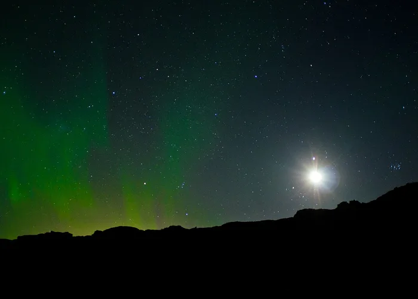
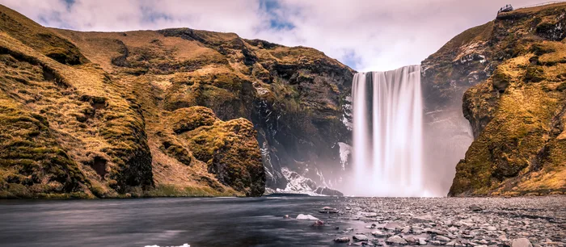
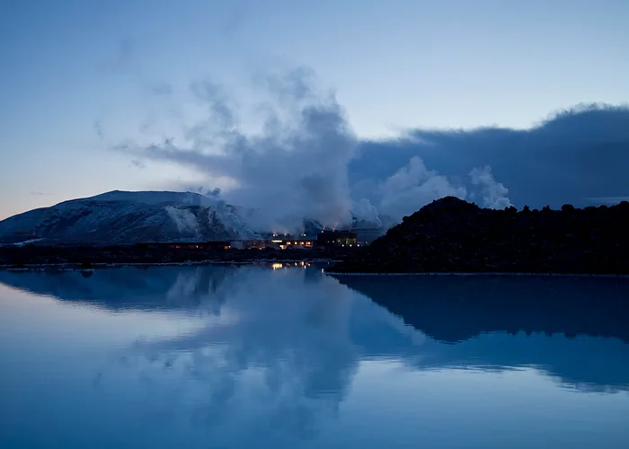
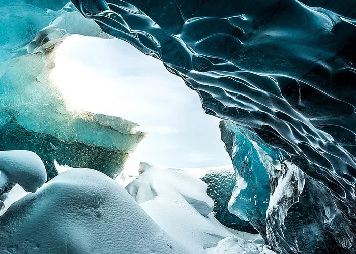

Northern Lights
Best viewed between September and April, away from city lights.
WDD 131 · Country Page
Wanderfar

The Land of Fire and Ice
Iceland is a small island nation where glaciers meet active volcanoes and the Northern Lights dance over black-sand beaches. Just a few hours from major European and North American hubs, it offers geothermal lagoons, thundering waterfalls, and some of the most dramatic, untouched landscapes on Earth. Whether you're chasing the aurora in winter or hiking the midnight sun in summer, Iceland rewards visitors with scenery unlike anywhere else in the world.
Partly Cloudy · Reykjavík

Best viewed between September and April, away from city lights.

A geothermal spa near Reykjavík, warmed by volcanic activity year-round.

Guided tours reveal electric-blue caverns beneath Vatnajökull glacier.